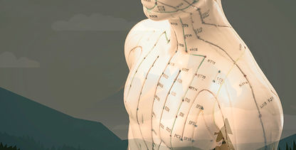

Acupuncture
A whole-person approach using acupuncture and related Chinese medicine techniques to support pain, stress and wellbeing.
Explore Acupuncture →Explore the main therapies offered at Kerikeri Centre of Balance, from acupuncture and Chinese herbal medicine to Tui Na, tapping and Tai Chi.

A whole-person approach using acupuncture and related Chinese medicine techniques to support pain, stress and wellbeing.
Explore Acupuncture →
Personalised herbal formulas selected from one of the world’s great traditional medicine systems.
Explore Herbal Medicine →
Traditional Chinese bodywork using pressure, movement and massage techniques to support recovery and mobility.
Explore Tui Na →
Needle-free meridian tapping techniques to support emotional stress, physical distress and self-regulation.
Explore Tapping →
Authentic Yang Family Taijiquan, mostly known as Tai Chi, for balance, flexibility and mindful movement.
Explore Tai Chi →